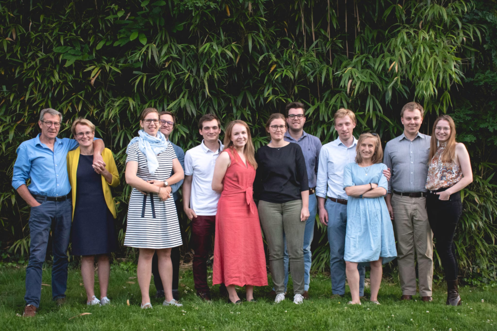

De cursus voorzag ons van een sterke theologische basis en heel wat praktische tips en inzichten, die mee de rots vormen waarop we elke dag kunnen verder bouwen in ons huwelijk. Het was fijn om deze weg af te leggen met andere jonge mensen die hetzelfde pad bewandelen. Geertrui en Jef hebben ons steeds met open armen ontvangen in hun thuis. We zijn dan ook dankbaar voor hun warmte en bereidheid.
L&M
A strong marriage requires two people who choose to love each other even on those days they struggle to like each otherDave Willis,